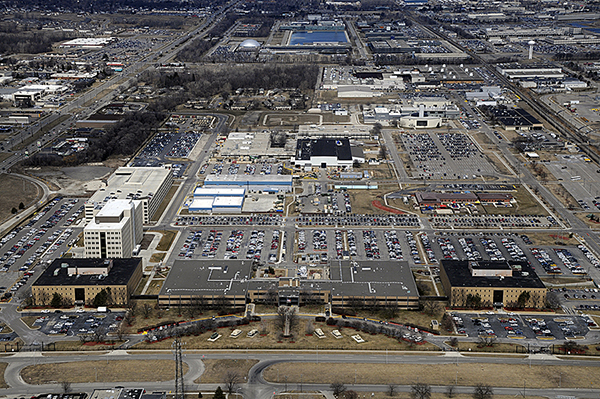
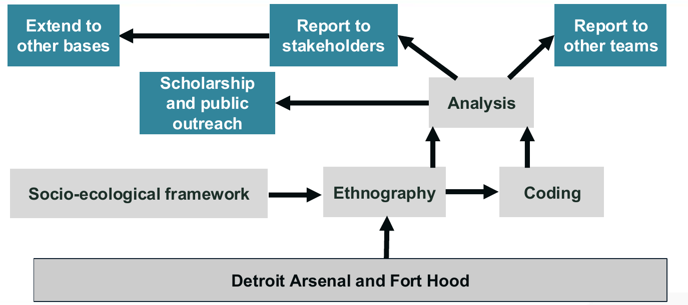
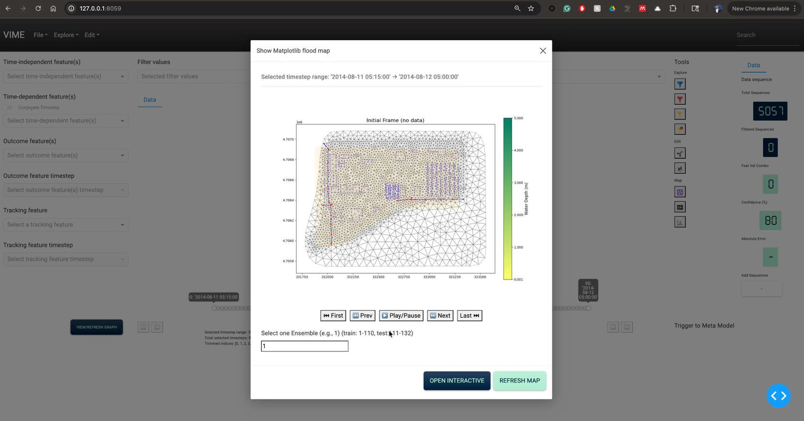
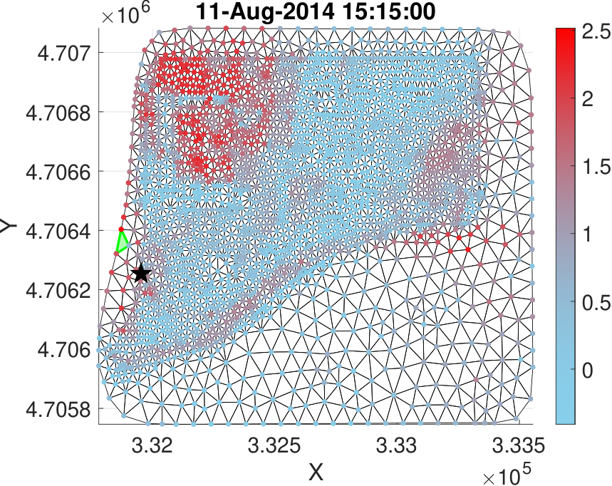
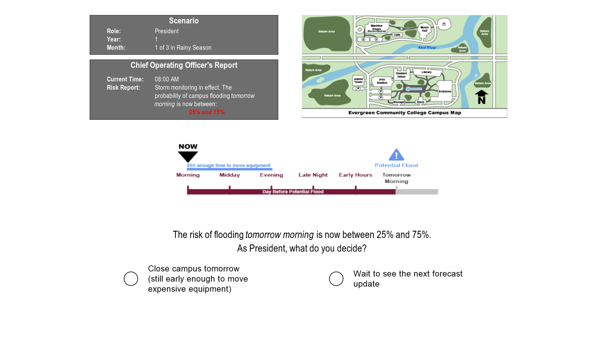
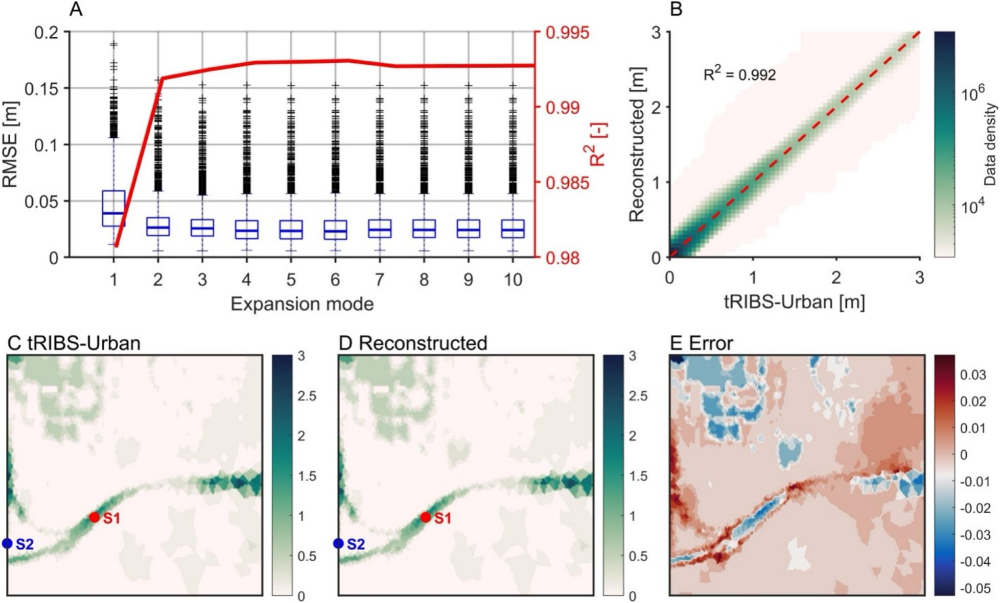

StoryMap
The Detroit Arsenal Flood: 2014 and Beyond (opens in a new tab)
Explore the StoryMapCreated by Joseph Nigro and the Anthropology team.
Flood and Weather Resilience through Risk-Informed Operations and Readiness
We connect flood prediction, human behavior, and uncertainty quantification to support decisions that protect people, infrastructure, and mission readiness.
Detroit Arsenal Collaboration
Our collaboration with Detroit Arsenal connects flood research to installation preparedness and response. Models of the Red Run watershed and the 2014 flood help us study inundation, monitoring needs, and decisions under uncertainty.
Site visits and conversations with installation personnel shape the research questions and the tools we develop.

StoryMap
Created by Joseph Nigro and the Anthropology team.
StoryMap
Created by Joseph Nigro and the Anthropology team.

Storm processes and uncertainty in rainfall forecasts.

Flood prediction across rivers, urban drainage, and connected watersheds.

Institutional responsibilities and regional coordination in flood resilience.

Visual tools for exploring flood forecasts and their consequences.

Bayesian methods for uncertainty analysis and sensor placement.

How people interpret flood forecasts and make decisions under uncertainty.

Tran et al. (2026), Figure 6.
A synthetic study combines physical simulations and inundation observations to reconstruct and forecast urban flooding.
Publication & ResourcesProject meeting illustration
Gray, Dominguez, and colleagues use a WRF ensemble to represent uncertainty in extreme precipitation forecasts.
Publication & ResourcesProject meeting illustration
Ziker, Whitaker, and colleagues examine uncertainty in urban stormwater systems that span jurisdictional boundaries.
Publication & Resources


Co-PI
University of Illinois Urbana-Champaign
Atmospheric Sciencefrancina@illinois.edu